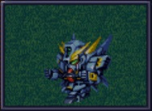
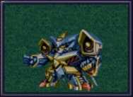
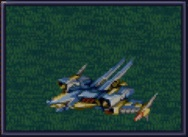
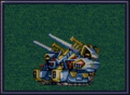

原创机体
括号内为PS版变动。地形补正(→)为用默认驾驶员的地形适应和机体的移动类型修正之后的数据。
我方机体
ゲシュペンスト（リアル）

HP 2300
EN 150
装甲 280
运动性 43
限界 195
类型 陆
移动力 8
大小 M
空C(B)→B
陆A
海B
宇A
ビームコート
スプリットミサイル
攻击 750
射程 1^6
命中 ^5
暴击 ^10
空A陆A海A宇A
弹数 4
プラズマカッター(P)🤛
攻击 970
射程 1
命中 +25
暴击 +10
空🚫陆A海A→B宇A
ニュートロンビーム
攻击 1600
射程 1^7
命中 +5
暴击 +20
空A陆A海🚫宇A
弹数 8
中子射线居然不算光线武器，使得敌方重战机和奥拉系的光线防御无效，简直是作弊啊。具有光线防御，很适合和机动战士系以及重战机系敌人战斗。
陆A的机体比较少见，即使是在主人公换乘凶鸟之后，亡灵在副主人公驾驶下也很活跃。机动战士系好机体本来就少，远攻本来就差一截的副主人公还是别跟4大新人类去抢机体了。
PS版不知为何将对空适应提升了，然而因为地形适应是取人物和机体的平均值并向下取整，这个修改并无什么影响。
ゲシュペンスト（スーパー）

HP 3100
EN 200
装甲 390（490）
运动性 32
限界 180
类型 陆
移动力 7
大小 M
空C→B
陆A
海B
宇A
ビームコート
スプリットミサイル
攻击 750
射程 1^6
命中 -5
暴击 -10
空A陆A海A宇A
弹数 4
プラズマカッター(P)🤛
攻击 970
射程 1
命中 +25
暴击 +10
空🚫陆A海A→B宇A
スマッシュビーム(P)
攻击 2150
射程 17
命中 +10
暴击 +20
空A陆A海🚫宇A
消费EN 30
必要气力 100
スマッシュビーム仍旧不算光线武器，而且消耗小，可以尽快改造。具有光线防御，很适合和机动战士系以及重战机系敌人战斗。陆A的机体比较少见，即使是在主人公换乘古伦加斯特之后，亡灵在副主人公驾驶下也很活跃。另外宇宙适应也是A，虽然攻击力不算出色，但是在超级系后期宇宙战普遍乏力时也算一个不错的战力。
机动战士系好机体本来就少，远攻本来就差一截的副主人公还是别跟4大新人类去抢机体了。
ヒュッケバイン

HP 3000
EN 180
装甲 320
运动性 65
限界 235
类型 陆
移动力 11
大小 M
空B
陆A
海C→B
宇A
分身
Iフィールド
60ミリバルカン(P)🤛
攻击 480
射程 1
命中 +25
暴击 -10
空A陆A海A→B宇A
弹数 10
4連ミサイルランチャー
攻击 970
射程 1~6
命中 -10
暴击 -10
空A陆A海A宇A
弹数 8
プラズマソード(P)🤛
攻击 1220
射程 1
命中 +14
暴击 +20
空🚫陆A海A→B宇A
マイクロミサイル(M)
攻击 1400
射程 1^8
命中 +10
暴击 -10
空A陆A海A宇A
弹数 3
ロシュセイバー(P)🤛
攻击 2100(2200)
射程 1
命中 +5
暴击 +30
空🚫陆A海A→B宇A
消费EN 20
リープスラッシャー
攻击 2800
射程 2~8
命中 -7
暴击 +20
空A陆A海A宇A
弹数 6
ブラックホールキャノン
攻击 3200
射程 3~10
命中 -12
暴击 +20
空A陆A海A宇A
消费EN 70
必要气力 100(120)
35话追加
凶鸟外观是一部高达，虽然设计者是同一个人，但由于版权属于公司或其他原因，存在侵犯版权的情况，以至于在后续作品中消失了很长一段时间。
有分身和强大的远程攻击，可以看作是F91的升级版，外加可以用奇迹+マイクロミサイル清版。具有我军最高的运动性和射程，I立场只是锦上添花，这个机体并不欢迎额外的EN消耗。
弱点是不能飞，有时不能迅速支援，好在移动力也很出色。如果加装ミノフスキークラフト的话，因为对空适应是B，所以也是能正常发挥的。
グルンガスト

HP 3900
EN 200
装甲 470(570)
运动性 40
限界 200
类型 空陆
移动力 8
大小 L
变形
空B
陆B
海C→B
宇A
ブレイククロス(P)
攻击 1040 (1240)
射程 1~3
命中 -8
暴击 +10
空A陆A海B宇A
弹数 6
オメガレーザー
攻击 1150 (1850)
射程 1~6
命中 -10
暴击 +0
空A陆A海C宇A
弹数 8
計都羅睺剣(P)🤛
攻击 1180 (1450)
射程 1
命中 +20
暴击 +20
空A陆A海A→B宇A
ブーストナックル(P)
攻击 1200 (1500)
射程 1~4
命中 -13
暴击 +10
空A陆A海A宇A
弹数 2
グルンガストビーム(P)
攻击 4720 (4800)
射程 1
命中 +0
暴击 +20
空A陆A海B宇A
消费EN 85
必要气力 120
計都羅睺剣・暗剣殺(P)🤛
攻击 6900
射程 1
命中 -14 (+20)
暴击 +30
空A陆A海A→B宇A
消费EN 120
必要气力 145
可以自定义机体名字，グルンガストビーム的名字也随之更改。因为消耗和大招冲突，不要改造グルンガストビーム。
账面数据好看但是因为空B陆B的原因，威力并不是那么大，只能在宇宙发挥最大威力，问题宇宙地图又不是很多。如果生日有魂或者奇迹的话，可以将任何敌人一击杀。除去大招之外，即使是加了攻击的PS版本，攻击力也和普通机动战士相差不多，并不适合对付杂鱼。如果有EN回复地形的话，可以拿来打比较难缠的小怪。
ウイングガスト

HP 3900
EN 200
装甲 380(520)
运动性 42
限界 200
类型 空
移动力 10
大小 L
变形
空A
陆🚫→C
海🚫→C
宇B
ダブルオメガレーザー
攻击 1520
射程 1~7
命中 -4
暴击 +10
空A陆A海C宇A
弹数 16
ビッグミサイル
攻击 2100
射程 1~6
命中 -20
暴击 -10
空A陆A海A宇A
弹数 4
スパイラルアタック(P)🤛
攻击 2970
射程 1
命中 +10
暴击 +30
空A陆A→🚫海A→🚫宇A
消费EN 40
必要气力 105
虽然是移动用的形态但是也有对空和宇宙很实用的格斗武器。到这台机体入手的时候地面也没有什么难缠的敌人，所以影响不大。
ガストランダー

HP 3900
EN 200
装甲 600(700)
运动性 35
限界 200
类型 陆
移动力 6
大小 L
变形
空🚫→C
陆A
海A
宇B
オメガキャノン
攻击 1460
射程 3~8
命中 -17
暴击 +0
空A陆A海C宇A
弹数 12
ビッグミサイル
攻击 2100
射程 1~6
命中 -20
暴击 -10
空A陆A海A宇A
弹数 4
ドリルアタック(P)🤛
攻击 2500
射程 1
命中 +5
暴击 +20
空🚫陆A海A宇B
消费EN 15
必要气力 105
重战车形态，大招威力有不反应改造段数的问题。装甲比较厚的炮台，也不畏惧近身的敌人。但是本作并不缺乏真实系来当炮台，所以……
サイバスター
范围很广的サイフラッシュ是消耗EN的，所以改满EN可以放三发。尽管数值很高，别的武器基本没有改造必要。
虽然限界有255，但是后期生存能力仍然堪忧，好在有复活的话，这说不定是优点，复活之后又可以加热血放サイフラッシュ了。
ザムジード
魔装机里加入比其他人早得多。数据不错的机体，但是被驾驶员拖累了。
グランゾン
你行动太快了，ネオグランゾン没准备好所以先用这个跑来加入。问题是加入的时候没有改造，只为了这一话而投入那么多钱真的有必要吗？